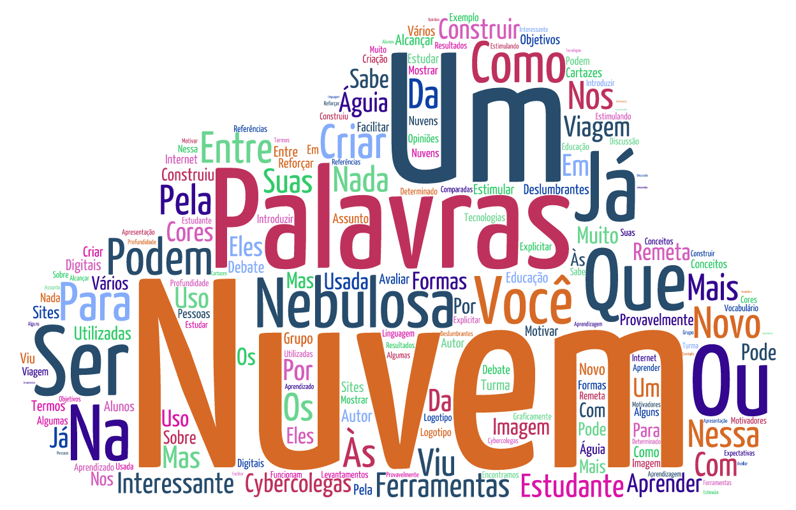
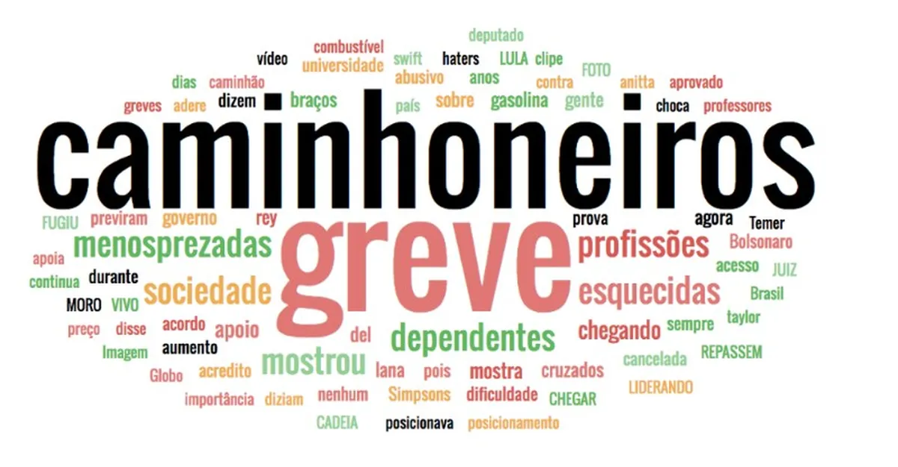
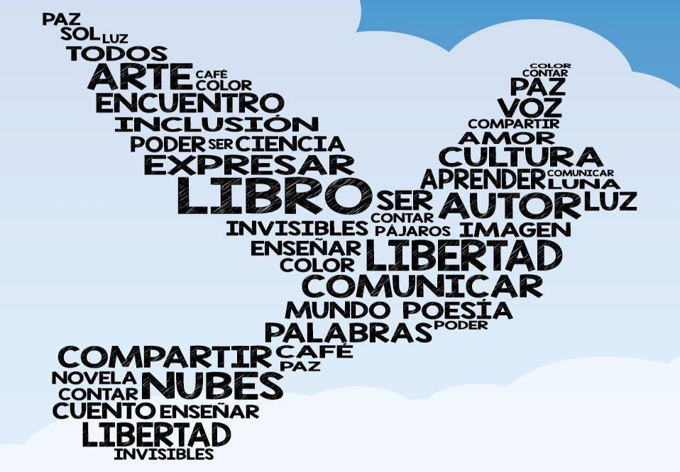

Para este treinamento, precisaremos dos seguintes pacotes:
Código
## Para melhor estabilidade do pacote wordcloud2,## utilize os seguintes comandos de instalação:# install.packages("devtools")# devtools::install_github("lchiffon/wordcloud2")require(openxlsx) # Leitura de arquivos xlsxrequire(stringr) # Manipulação de textosrequire(ggwordcloud) # Nuvem de palavras (ggplot2)require(wordcloud2) # Nuvem de palavras (html)require(tidyr) # Limpezarequire(tidytext) # Tokenização profissionalrequire(pals) # Paleta de Coresrequire(png) # Carrega shapes de fora do R
8.2INTRODUÇÃO
Este treinamento é dedicado a uma das formas mais visuais, intuitivas e impactantes de se explorar dados textuais: as Nuvens de Palavras. Neste módulo, focaremos especificamente na implementação utilizando os pacotes ggwordcloud e wordcloud2 dentro do ecossistema R.
Antes de mergulharmos nos códigos, é fundamental construirmos uma base conceitual sólida.
8.2.1O QUE É UMA NUVEM DE PALAVRAS
Uma nuvem de palavras (do inglês word cloud ou tag cloud) é uma técnica de visualização de dados aplicada a variáveis textuais. Em sua essência, é uma representação gráfica na qual as palavras que compõem um texto (ou conjunto de textos) são dispostas em uma área delimitada, onde o tamanho da fonte de cada palavra é diretamente proporcional à sua frequência ou importância no documento original.
É crucial entender que a nuvem de palavras não é um gráfico estatístico rigoroso como um histograma ou um boxplot; ela é uma ferramenta de Sumarização Visual e Exploração Qualitativa. Ela transforma a abstração da linguagem em um objeto visual concreto.
Veja alguns exemplos:



Suas principais características conceituais são:
Peso Visual: A frequência dita o tamanho. Palavras que aparecem muitas vezes (alta frequência) ocupam mais espaço, chamando a atenção imediatamente.
Orientação e Layout: A disposição pode ser aleatória (nuvem clássica) ou organizada (em formas geométricas ou silhuetas específicas). Isso influencia diretamente na legibilidade e na estética.
Paleta de Cores: Embora o tamanho seja o canal visual primário para a frequência, a cor pode ser usada para mapear uma terceira variável, como a classificação gramatical, o sentimento (positivo/negativo) ou simplesmente para criar harmonia visual.
8.2.2POR QUE UTILIZAR NUVENS DE PALAVRAS?
Embora alguns estatísticos possam torcer o nariz por sua aparente simplicidade, a nuvem de palavras ocupa um lugar de destaque na caixa de ferramentas de Analistas de Dados, Cientistas Sociais e Profissionais de Marketing. Seu poder reside na comunicação imediata.
As vantagens e contextos de uso são:
Análise Exploratória de Dados (AED) Textual: Antes de rodar modelos mais complexos envolvendo processamento de linguagem, ela permite ao pesquisador “sentir o cheiro” dos dados. Em segundos, é possível identificar:
O tema central de um discurso político.
Os termos recorrentes em avaliações de clientes.
Possíveis stop words que não foram removidas adequadamente (ex: “que”, “para”, “com” aparecendo enormes).
Storytelling e Comunicação de Resultados: Para um público não-técnico, um gráfico de barras com as 20 palavras mais frequentes pode ser entediante. Uma nuvem de palavras bem desenhada é uma peça de design. Ela engaja o leitor e transmite a essência qualitativa da mensagem sem exigir esforço cognitivo analítico.
Identificação de Vieses e Lacunas: Em um contexto educacional, uma nuvem de palavras construída a partir das respostas dos alunos a uma pergunta aberta (ex: “O que você mais gostou no curso?”) revela imediatamente se o foco foi “didática” , “conteúdo” ou “professor” .
SEO e Análise de Concorrência: No mundo digital, analisar a nuvem de palavras de um site ou de tweets permite entender rapidamente quais palavras-chave estão sendo mais associadas a uma marca ou evento.
8.2.3OS CUIDADOS NA CONSTRUÇÃO DE NUVENS DE PALAVRAS
Não basta jogar um texto bruto no software e gerar a imagem. Uma boa nuvem de palavras exige Pré-processamento de Texto e Curadoria Humana. Sem isso, o resultado é apenas poluição visual.
Os fatores críticos para uma nuvem de qualidade são:
O Problema das Stop Words: São as palavras de ligação (artigos, preposições, conjunções). Palavras como “de” , “a” , “o” , “e” , “que” são, geralmente, as mais frequentes em qualquer idioma. Se não forem removidas do corpus, elas dominarão a nuvem, escondendo os termos substantivos e adjetivos que realmente carregam significado.
Stemming e Lemmatização: Palavras com o mesmo radical, mas flexões diferentes (ex: “Análise” , “Analisar” , “Analisando” , “Analista” ). Dependendo do objetivo, pode ser desejável agrupar esses termos sob uma única representação para evitar fragmentação da frequência.
A Ilusão da Área: O olho humano não é muito bom em comparar áreas de formas irregulares (as palavras escritas). É por isso que um gráfico de barras é mais preciso para comparar quantidades exatas. A nuvem de palavras serve ao impacto geral, não à precisão decimal.
Layout e Ordenação: A posição da palavra é aleatória (ou algorítmica visando preencher espaços). Isso significa que a palavra mais importante não está necessariamente no centro (a não ser que forcemos isso via código).
8.2.4NUVENS DE PALAVRAS NO R
Existem diversas formas de gerar nuvens de palavras no R, cada uma com suas particularidades e níveis de controle. Neste material, daremos destaque a duas abordagens bastante utilizadas: ggwordcloud e wordcloud2, que atendem a diferentes necessidades de visualização.
ggwordcloud: ideal para quem busca alto controle estético, permitindo personalizações refinadas e integração direta com o Tidyverse e o ggplot2, sendo excelente para produções mais analíticas e reprodutíveis.
wordcloud2: indicado para criar visualizações interativas e visualmente atrativas com facilidade, especialmente quando se deseja utilizar exportações rápidas com apelo visual.
8.3SITUAÇÃO PRÁTICA MOTIVADORA
Como contexto aplicado para o desenvolvimento do Projeto I, consideram-se dados reais coletados por alunas do curso de pós-graduação em Nutrição da Universidade Federal Fluminense (UFF). O conjunto de dados reúne informações de 2310 indivíduos que responderam a um questionário online no ano de 2022, durante o período da pandemia. A base de dados está armazenada no arquivo Nutricao.xlsx e está disponível no Google Classroom.
As 28 variáveis coletadas abrangem diferentes dimensões relevantes para a análise, incluindo características sociodemográficas, aspectos relacionados à pandemia e mudanças nos hábitos alimentares. A Tabela a seguir apresenta a descrição detalhada dessas variáveis, seus significados e respectivas categorias ou unidades de medida.
Aumentou; Diminuiu; Não alterou; Não tenho o hábito
Variáveis Contínuas
Idade
Idade do participante
Anos
Altura
Altura do participante
Metros
Peso
Peso do participante
Quilogramas
IMC
Índice de Massa Corporal
kg/m²
Questão Aberta
sentimentos_pandemia
Sentimentos relatados durante a pandemia
Resposta aberta (múltiplas categorias)
Variáveis Resposta
Delivery
Mudança no consumo de delivery
Aumentou; Diminuiu; Não alterou; Não tenho o hábito
Paes_Torradas_Biscoitos
Mudança no consumo de pães, torradas e biscoitos
Aumentou; Diminuiu; Não alterou; Não consumo
Leites_Derivados
Mudança no consumo de leites e derivados
Aumentou; Diminuiu; Não alterou; Não consumo
Ovos_Carnes
Mudança no consumo de ovos e carnes
Aumentou; Diminuiu; Não alterou; Não consumo
Doces
Mudança no consumo de doces
Aumentou; Diminuiu; Não alterou; Não consumo
Bebidas_Alcoolicas
Mudança no consumo de bebidas alcoólicas
Aumentou; Diminuiu; Não alterou; Não consumo
Refrigerante
Mudança no consumo de refrigerantes
Aumentou; Diminuiu; Não alterou; Não consumo
Embutidos
Mudança no consumo de embutidos
Aumentou; Diminuiu; Não alterou; Não consumo
Particularmente, este estudo conta com a variável aberta sentimentos_pandemia. Vamos fazer gráficos de nuvem para essa variável explorando ao máximo as funções do pacote ggwordcloud. A base está armazenada no arquivo nutricao.xlsx. Os comandos a seguir fazem a leitura da base de dados:
Dados =read.xlsx("Nutricao.xlsx")
8.4PRÉ-PROCESSAMENTO DO TEXTO
Antes de sequer pensarmos em abrir o ggplot2 ou invocar a função geom_text_wordcloud() do pacote ggwordcloud ou a função wordcloud2 do pacote wordcloud2, existe uma etapa absolutamente fundamental que determinará o sucesso ou o fracasso de nossa nuvem de palavras: o Pré-processamento do Texto.
8.4.1POR QUE PRÉ-PROCESSAR É INEGOCIÁVEL?
Imagine receber um conjunto de dados brutos como a nossa variável sentimentos_pandemia contendo frases como:
“Medo, incerteza. Solidão… mas também: ESPERANÇA, empatia e RESILIÊNCIA!”
Se jogássemos esse texto cru diretamente no contador de palavras, enfrentaríamos uma série de problemas graves que tornariam a visualização final inútil ou, pior, enganosa.
Os vilões do texto bruto são:
Pontuação e Caracteres Especiais: Vírgulas (,), pontos (.), exclamações (!), interrogações (?), dois pontos (:) e reticências (...) ficam “grudados” nas palavras. Para um computador, “Medo” e “Medo,” (com vírgula) são duas palavras diferentes. A frequência real do termo “Medo” seria fragmentada e subestimada.
Capitalização Inconsistente (Case Sensitivity): A linguagem R é case sensitive. Isso significa que “Esperança” (com E maiúsculo) e “esperança” (com e minúsculo) são tratadas como entidades distintas. Se não houver uma normalização, a palavra aparecerá duplicada na nuvem (uma vez grande, outra pequena), um erro crasso de qualidade de dados.
Palavras Excessivamente Curtas: Termos com 1, 2 ou 3 letras raramente carregam significado substantivo em uma análise de sentimentos. Palavras como “DE” , “E” , “O” , “QUE” , “NÃO” e “COM” são extremamente frequentes, mas são apenas “cimento linguístico” que une os “tijolos semânticos” . Se mantidas, elas dominarão o centro da nuvem, empurrando palavras verdadeiramente relevantes como “MEDO” , “ESPERANÇA” ou “SOLIDÃO” para as bordas.
Espaços em Branco Excessivos: Espaços duplos ou tabulações podem gerar tokens vazios durante a contagem.
8.4.2O PROCESSO DE LIMPEZA E NORMALIZAÇÃO
Para resolver esses problemas, aplicaremos uma sequência de transformações utilizando funções nativas do R e o poder do pacote stringr (parte do tidyverse). O objetivo é transformar o texto sujo em um corpus limpo e padronizado.
Inicialmente, focaremos nos seguintes passos específicos:
Remoção de Pontuação: Eliminaremos vírgulas, pontos, hífens e outros sinais gráficos.
Conversão para Minúsculas: Uniformizaremos todas as letras para caixa baixa, eliminando a distinção entre maiúsculas e minúsculas.
Remoção de Palavras Curtas: Eliminaremos termos com 3 caracteres ou menos (este limite é ajustável conforme a necessidade analítica).
Tokenização e Contagem: Separaremos o texto em palavras individuais e calcularemos a frequência absoluta de cada uma.
Aqui está o coração do pré-processamento. Observe os comentários em cada linha para entender a transformação. Preste atenção especial ao Passo 6, onde removemos as palavras curtas.
Código
frequencia_palavras <- Dados %>%# Passo 1: Selecionar e garantir que o texto está como caracteremutate(texto_limpo =as.character(sentimentos_pandemia)) %>%# Passo 2: REMOVER PONTUAÇÃO (vírgulas, pontos, exclamações, etc.)# A regex [\\.,!?;:()\\[\\]{}"'-] remove os sinais mais comuns.# Substitui qualquer um desses caracteres por um espaço vazio "".mutate(texto_limpo =str_replace_all(texto_limpo, "[\\.,!?;:()\\[\\]{}“”\"'-]", "")) %>%# Passo 3: CONVERTER TUDO PARA minúsculas# str_to_lower() resolve o problema de case sensitivity.mutate(texto_limpo =str_to_lower(texto_limpo)) %>%# Passo 4: Tokenização (separar o texto em palavras)# A função unnest_tokens do tidytext é a melhor prática.# Ela automaticamente trata espaços múltiplos e quebras de linha.unnest_tokens(output = palavra, input = texto_limpo) %>%# Passo 5: Remover possíveis palavras vazias geradas por pontuação no finalfilter(palavra !="") %>%# Passo 6: REMOVER PALAVRAS CURTAS (CRUCIAL!)# Utilizamos str_length() para medir o número de caracteres.# Mantemos apenas palavras com MAIS de 3 caracteres (ou seja, >= 4).# Por que 3? Porque palavras como "MEDO", "AMOR", "PAZ", "LUTO" têm 4 letras.# Palavras como "DE", "E", "O", "QUE", "NÃO", "COM" (1 a 3 letras) são removidas.filter(str_length(palavra) >3) %>%# Passo 7: CONTABILIZAR A FREQUÊNCIA ABSOLUTA E RELATIVA (%)count(palavra, sort =TRUE, name ="n") %>%mutate(porc =round((n /sum(n)) *100, 2))
O limite de 3 caracteres ( > 3 ) é uma escolha metodológica, não uma lei imutável. Palavras de 3 letras como “PAZ” , “DOR” ou “FÉ” são extremamente significativas no contexto da pandemia. Se desejarmos preservá-las, basta alterar o filtro no Passo 6.
Se você tiver no seu estudo alguma(s) palavra(s) que você queira remover, basta usar a seguinte sintaxe: palavras_proibidas <- c("coloque as palavras"). Posteriormente, use o comando: filter(!palavra %in% palavras_proibidas)
O código acima produziu um novo data frame chamado frequencia_palavras. Este objeto é exatamente o que o pacote ggwordcloud espera receber.
Coluna palavra: Contém os termos limpos, em caixa baixa e com mais de 3 caracteres.
Coluna n: Contém a frequência absoluta (o número de vezes que a palavra apareceu em todo o conjunto da coluna sentimentos_pandemia).
Coluna porc: Contém a frequência relativa (%) (a porcentagem de vezes que a palavra apareceu em todo o conjunto da coluna sentimentos_pandemia).
Para visualizar as 15 palavras mais mencionadas, utilize o comando:
Considere o objetivo agora de construir a nuvem de palavras estratificando pela variávelGenero. Assim, mudamos apenas o passo 7 acima e temos o seguinte pré-processamento:
Código
frequencia_palavras_genero <- Dados %>%# Passo 1: Selecionar e garantir que o texto está como caracteremutate(texto_limpo =as.character(sentimentos_pandemia)) %>%# Passo 2: REMOVER PONTUAÇÃO (vírgulas, pontos, exclamações, etc.)# A regex [\\.,!?;:()\\[\\]{}"'-] remove os sinais mais comuns.# Substitui qualquer um desses caracteres por um espaço vazio "".mutate(texto_limpo =str_replace_all(texto_limpo, "[\\.,!?;:()\\[\\]{}“”\"'-]", "")) %>%# Passo 3: CONVERTER TUDO PARA minúsculas# str_to_lower() resolve o problema de case sensitivity.mutate(texto_limpo =str_to_lower(texto_limpo)) %>%# Passo 4: Tokenização (separar o texto em palavras)# A função unnest_tokens do tidytext é a melhor prática.# Ela automaticamente trata espaços múltiplos e quebras de linha.unnest_tokens(output = palavra, input = texto_limpo) %>%# Passo 5: Remover possíveis palavras vazias geradas por pontuação no finalfilter(palavra !="") %>%# Passo 6: REMOVER PALAVRAS CURTAS (CRUCIAL!)# Utilizamos str_length() para medir o número de caracteres.# Mantemos apenas palavras com MAIS de 3 caracteres (ou seja, >= 4).# Por que 3? Porque palavras como "MEDO", "AMOR", "PAZ", "LUTO" têm 4 letras.# Palavras como "DE", "E", "O", "QUE", "NÃO", "COM" (1 a 3 letras) são removidas.filter(str_length(palavra) >3) %>%# Passo 7: CONTABILIZAR A FREQUÊNCIA ABSOLUTA E RELATIVA (%)group_by(Genero, palavra) %>%summarise(n =n(), .groups ="drop_last") %>%# Calcular porcentagem DENTRO DE CADA GRUPO DE GENEROmutate(porc =round((n /sum(n)) *100, 2)) %>%ungroup()
O código acima produziu um novo data frame chamado frequencia_palavras_genero. Este objeto é exatamente o que o pacote ggwordcloud espera receber.
Coluna Genero: Contém os gêneros avaliados no estudo.
Coluna palavra: Contém os termos limpos, em caixa baixa e com mais de 3 caracteres.
Coluna n: Contém a frequência absoluta (o número de vezes que a palavra apareceu em todo o conjunto da coluna sentimentos_pandemia).
Coluna porc: Contém a frequência relativa (%) (a porcentagem de vezes que a palavra apareceu em todo o conjunto da coluna sentimentos_pandemia).
8.5OS PACOTES ggwordcloud e wordcloud2
Agora que compreendemos o conceito e a importância das nuvens de palavras como ferramenta de visualização textual e já fizemos o pré-processamento dos dados, é o momento de apresentarmos os instrumentos técnicos que nos permitirão construir essas representações com precisão, elegância e reprodutibilidade dentro do ecossistema R: os pacotes ggwordcloud e wordcloud2.
8.5.1O PACOTE ggwordcloud
O ggwordcloud é um pacote desenvolvido para o ambiente R que fornece uma geom específica para a criação de nuvens de palavras utilizando a gramática dos gráficos da ggplot2. Em termos práticos, ele estende a funcionalidade do pacote ggplot2 adicionando uma nova camada geométrica: a geom_text_wordcloud() (e suas variantes).
Isso significa que, ao invés de aprendermos uma sintaxe completamente nova ou recorrermos a funções isoladas e pouco customizáveis, nós aproveitamos todo o conhecimento prévio que temos (ou teremos) sobre ggplot2. Conceitos como mapeamento estético (aes()), camadas (+), temas (theme_*) e escalas (scale_*) são integralmente aplicáveis.
O ggwordcloud se destaca e se torna a escolha ideal para um fluxo de trabalho profissional e acadêmico por ser uma integração nativa com o ggplot2 e o Tidyverse.
8.5.2A FUNÇÃO geom_text_wordcloud
Esta função é uma extensão direta das geometrias do ggplot2 (geom_text(), geom_point(), geom_bar(), etc.). Isso significa que ela não substitui o ggplot2, mas sim adiciona uma nova capacidade a ele. A lógica de construção do gráfico permanece a mesma: começamos com ggplot(), definimos os mapeamentos estéticos em aes() e adicionamos a camada geom_text_wordcloud().
A estrutura mais simples para criar uma nuvem de palavras é:
Onde: - dados : O data frame resultante do nosso pré-processamento. - label : A coluna que contém as palavras (texto que será renderizado). - size : A coluna que contém a frequência ou peso (determina o tamanho visual).
Entretanto, a função geom_text_wordcloud() possui uma série de argumentos que nos permitem controlar desde o comportamento algorítmico até a estética fina da visualização. Vamos explorar cada um deles em detalhe.
8.5.2.1ARGUMENTOS DE MAPEAMENTO
Estes argumentos são herdados da gramática do ggplot2 e são definidos dentro de aes():
Argumento
Tipo
Obrigatório?
Descrição e Finalidade
label
character
✅ SIM
A coluna que contém o texto a ser exibido (as palavras). É o equivalente ao texto que aparecerá na nuvem.
size
numeric
✅ SIM
A coluna que contém a frequência, peso ou porcentagem de cada palavra. Controla o tamanho da fonte proporcionalmente a este valor.
color
character/factor
❌ NÃO
Coluna categórica para colorir as palavras. Pode ser usada para diferenciar sentimentos, grupos ou classificações gramaticais.
angle
numeric
❌ NÃO
Controla o ângulo de rotação das palavras (em graus). Pode ser um valor fixo (ex: angle = 0 para todas horizontais) ou um vetor (ex: angle = c(0, 90) para misturar horizontais e verticais).
alpha
numeric (0 a 1)
❌ NÃO
Controla a transparência das palavras. Útil para criar camadas de profundidade visual.
family
character
❌ NÃO
Define a fonte tipográfica (ex: "Arial", "Times New Roman", "Montserrat").
fontface
character
❌ NÃO
Define o estilo da fonte: "plain" (normal), "bold" (negrito), "italic" (itálico) ou "bold.italic".
8.5.2.2ARGUMENTOS DE COMPORTAMENTO
Estes argumentos controlam COMO as palavras são posicionadas e distribuídas no espaço. São definidos dentro de geom_text_wordcloud():
Argumento
Valor Padrão
Descrição e Finalidade
shape
"circle"
Define a forma geométrica do contorno da nuvem. Opções comuns: "circle" (círculo), "square" (quadrado), "cardioid" (formato de coração), "diamond" (diamante), "triangle" (triângulo). É possível também usar uma imagem como máscara (ver mask abaixo).
seed
NULL (aleatório)
Argumento CRUCIAL para reprodutibilidade. Ao definir um número inteiro (ex: seed = 42), você “congela” o gerador de números aleatórios. O layout da nuvem será exatamente o mesmo toda vez que o código for executado. SEMPRE defina um seed em contextos acadêmicos ou profissionais.
rm_outside
FALSE
Quando TRUE, remove palavras que não couberam dentro da área delimitada por shape. Se FALSE (padrão), o algoritmo tenta encaixar todas as palavras, mesmo que algumas fiquem muito pequenas.
max_steps
1000
Número máximo de tentativas de posicionamento para cada palavra antes de desistir. Aumentar este valor pode melhorar o encaixe de palavras em nuvens muito densas, mas aumenta o tempo de processamento.
grid_size
0.01
Controla a granularidade da grade usada pelo algoritmo para verificar colisões entre palavras. Valores menores produzem layouts mais precisos, porém mais lentos. Valores entre 0.01 e 0.05 são razoáveis para a maioria dos casos.
eccentricity
0.9
Controla a achatamento da forma. Valores próximos de 1 tendem a formas mais circulares; valores menores produzem formas mais elípticas ou alongadas.
mask
NULL
Permite usar uma imagem externa (formato PNG) como máscara para a nuvem. As palavras serão posicionadas apenas dentro do contorno da imagem. Exemplo: mask = png::readPNG("mapa_brasil.png").
8.5.2.3UM COMANDO IMPORTANTE
Ao aproveitar a gramática do ggplot2, o comando scale_size_area(max_size = número) permite controlar o tamanho máximo das palavras na nuvem, garantindo que a área dos textos seja proporcional aos valores representados (como frequências), ao mesmo tempo em que limita visualmente o tamanho máximo para manter a legibilidade e o equilíbrio estético da visualização.
8.5.3O PACOTE wordcloud2
O wordcloud2 é um pacote desenvolvido para o ambiente R que utiliza o motor gráfico HTML5 Canvas via htmlwidgets para gerar nuvens de palavras interativas e visualmente atraentes.
Diferente do ggwordcloud (que segue a gramática do ggplot2), o wordcloud2 funciona de forma mais autônoma: uma única função principal que aceita um data frame ou uma matriz.
Principais vantagens: - Interatividade (zoom, hover com tooltips) - Máscaras de imagem flexíveis (formato coração, estrela, ou imagem personalizada) - Animações suaves de posicionamento
8.5.3.1A FUNÇÃO wordcloud2()
Esta é uma função autônoma que não depende do ggplot2. A lógica é mais direta: você passa os dados e os parâmetros em uma única chamada.
A estrutura básica é:
library(wordcloud2)wordcloud2(data = dados)
Onde o data : Data frame resultante do pré-processamento com duas colunas iniciais (palavras e frequencia).
Os principais argumentos dessa função são:
Argumento
Valor Padrão
Descrição e Finalidade
data
data.frame
✅ SIM
:—
:—
:—
size
1
Fator de escala global. Valores >1 aumentam todas as palavras; <1 diminui.
minSize
0
Tamanho mínimo da fonte para palavras (útil para filtrar visualmente termos raros).
gridSize
0
Granularidade da grade de posicionamento (0 = automático).
fontFamily
“sans”
Família tipográfica (“Arial”, “Times New Roman”, “Impact”, etc.).
fontWeight
“normal”
Peso da fonte: “normal”, “bold”, “bolder”, “lighter”.
color
“random-dark”
Esquema de cores: “random-dark”, “random-light”, ou paleta personalizada (ex: “#RRGGBB”).
backgroundColor
“white”
Cor de fundo da nuvem.
shape
“circle”
Forma da nuvem: “circle”, “cardioid” (coração), “diamond”, “triangle-forward”, “triangle”, “star”.
ellipticity
0.7
Achatamento da forma (0 = círculo perfeito, >1 = elipse horizontal).
Foi usado o `size = log(n+1) para suavizar a dimensão das frequências. Essa estratégia é extremamente útil quando as frequências variam bastante.
Para a paleta de cores, utilizou-se a paleta glasbey do pacote pals a partir da função scale_color_manual. Para outras cores veja o link pals.
Para controlar a apresentação das palavras com frequências maiores, basta usar de estratégias do universo tidyverse. Por exemplo, para exibir as palavras que possuem frequência maiores que 1, basta usar o comando filter:
Note que o realce do gráfico é feito na escala logaritmica. Infelizmente, a função não possui argumentos para que sejam exibidas outras variáveis no tooltip. Para alterar isso, deve-se modificar a função wordcloud2 como neste link: (github)[https://github.com/Lchiffon/wordcloud2/issues/63]
Para construir a nuvem de palavras a partir de uma forma externa, usamos o argumento figpath:
Com o pacote ggwordcloud, para estratificar segundo uma variável qualitativa, basta usar o comando facet_wrap() da gramática ggplot2. Além disso, como estamos comparando categorias, é mais interessante dimensionar o tamanho das palavras de acordo com a variável porc. Veja nos seguintes comandos:
---output: html_documenteditor_options: chunk_output_type: console---# **CONSTRUINDO NUVENS DE PALAVRAS COM O `R`**## **PACOTES NECESSÁRIOS**Para este **treinamento**, precisaremos dos seguintes **pacotes**:```{r, echo=T}## Para melhor estabilidade do pacote wordcloud2,## utilize os seguintes comandos de instalação:# install.packages("devtools")# devtools::install_github("lchiffon/wordcloud2")require(openxlsx) # Leitura de arquivos xlsxrequire(stringr) # Manipulação de textosrequire(ggwordcloud) # Nuvem de palavras (ggplot2)require(wordcloud2) # Nuvem de palavras (html)require(tidyr) # Limpezarequire(tidytext) # Tokenização profissionalrequire(pals) # Paleta de Coresrequire(png) # Carrega shapes de fora do R```## **INTRODUÇÃO**Este treinamento é dedicado a uma das formas mais **visuais**, **intuitivas** e **impactantes** de se explorar dados textuais: as **Nuvens de Palavras**. Neste módulo, focaremos especificamente na implementação utilizando os pacotes **`ggwordcloud`** e **`wordcloud2`** dentro do ecossistema **R**.Antes de mergulharmos nos códigos, é fundamental construirmos uma base conceitual sólida. ### **O QUE É UMA NUVEM DE PALAVRAS**Uma **nuvem de palavras** (do inglês *word cloud* ou *tag cloud*) é uma técnica de **visualização de dados** aplicada a **variáveis textuais**. Em sua essência, é uma representação gráfica na qual as palavras que compõem um texto (ou conjunto de textos) são dispostas em uma área delimitada, onde o **tamanho da fonte** de cada palavra é **diretamente proporcional** à sua **frequência** ou **importância** no documento original.É crucial entender que a nuvem de palavras não é um gráfico estatístico rigoroso como um histograma ou um boxplot; ela é uma ferramenta de **Sumarização Visual** e **Exploração Qualitativa**. Ela transforma a **abstração da linguagem** em um **objeto visual concreto**.Veja alguns **exemplos**:Suas **principais características** conceituais são:- **Peso Visual:** A **frequência** dita o tamanho. Palavras que aparecem muitas vezes (**alta frequência**) ocupam mais espaço, chamando a atenção imediatamente.- **Orientação e Layout:** A disposição pode ser **aleatória** (nuvem clássica) ou **organizada** (em formas geométricas ou silhuetas específicas). Isso influencia diretamente na **legibilidade** e na **estética**.- **Paleta de Cores:** Embora o tamanho seja o canal visual primário para a frequência, a **cor** pode ser usada para mapear uma terceira variável, como a **classificação gramatical**, o **sentimento** (positivo/negativo) ou simplesmente para criar **harmonia visual**.### **POR QUE UTILIZAR NUVENS DE PALAVRAS?**Embora alguns estatísticos possam torcer o nariz por sua aparente simplicidade, a **nuvem de palavras** ocupa um lugar de destaque na caixa de ferramentas de **Analistas de Dados**, **Cientistas Sociais** e **Profissionais de Marketing**. Seu poder reside na **comunicação imediata**.As **vantagens e contextos** de uso são:- **Análise Exploratória de Dados (AED) Textual:** Antes de rodar modelos mais complexos envolvendo processamento de linguagem, ela permite ao pesquisador **"sentir o cheiro"** dos dados. Em segundos, é possível identificar: - O **tema central** de um discurso político. - Os **termos recorrentes** em avaliações de clientes. - Possíveis **stop words** que não foram removidas adequadamente (ex: "que", "para", "com" aparecendo enormes).- **Storytelling e Comunicação de Resultados:** Para um público **não-técnico**, um gráfico de barras com as 20 palavras mais frequentes pode ser entediante. Uma **nuvem de palavras bem desenhada** é uma **peça de design**. Ela engaja o leitor e transmite a **essência qualitativa** da mensagem sem exigir esforço cognitivo analítico.- **Identificação de Vieses e Lacunas:** Em um contexto educacional, uma nuvem de palavras construída a partir das respostas dos alunos a uma pergunta aberta (ex: "O que você mais gostou no curso?") revela imediatamente se o foco foi **"didática"** , **"conteúdo"** ou **"professor"** .- **SEO e Análise de Concorrência:** No mundo digital, analisar a nuvem de palavras de um site ou de *tweets* permite entender rapidamente quais **palavras-chave** estão sendo mais associadas a uma marca ou evento.### **OS CUIDADOS NA CONSTRUÇÃO DE NUVENS DE PALAVRAS**Não basta jogar um texto bruto no software e gerar a imagem. Uma boa nuvem de palavras exige **Pré-processamento de Texto** e **Curadoria Humana**. Sem isso, o resultado é apenas poluição visual.Os **fatores críticos** para uma **nuvem** de qualidade são:- **O Problema das *Stop Words***: São as palavras de ligação (artigos, preposições, conjunções). Palavras como **"de"** , **"a"** , **"o"** , **"e"** , **"que"** são, geralmente, as mais frequentes em qualquer idioma. Se não forem **removidas** do corpus, elas dominarão a nuvem, escondendo os termos **substantivos** e **adjetivos** que realmente carregam **significado**.- **Stemming e Lemmatização**: Palavras com o mesmo radical, mas flexões diferentes (ex: **"Análise"** , **"Analisar"** , **"Analisando"** , **"Analista"** ). Dependendo do objetivo, pode ser desejável **agrupar** esses termos sob uma única representação para evitar fragmentação da frequência.- **A Ilusão da Área**: O olho humano não é muito bom em comparar **áreas** de formas irregulares (as palavras escritas). É por isso que um gráfico de barras é mais preciso para comparar quantidades exatas. A nuvem de palavras serve ao **impacto geral**, não à precisão decimal.- **Layout e Ordenação**: A posição da palavra é **aleatória** (ou algorítmica visando preencher espaços). Isso significa que a palavra mais importante **não está necessariamente no centro** (a não ser que forcemos isso via código).### **NUVENS DE PALAVRAS NO `R`**Existem diversas formas de gerar nuvens de palavras no **R**, cada uma com suas particularidades e níveis de controle. Neste material, daremos destaque a duas abordagens bastante utilizadas: **`ggwordcloud`** e **`wordcloud2`**, que atendem a diferentes necessidades de visualização.- **`ggwordcloud`**: ideal para quem busca **alto controle estético**, permitindo personalizações refinadas e integração direta com o **Tidyverse** e o **`ggplot2`**, sendo excelente para produções mais analíticas e reprodutíveis.- **`wordcloud2`**: indicado para criar **visualizações interativas e visualmente atrativas** com facilidade, especialmente quando se deseja utilizar exportações rápidas com apelo visual.## **SITUAÇÃO PRÁTICA MOTIVADORA**Como contexto aplicado para o desenvolvimento do Projeto I, consideram-se dados reais coletados por alunas do curso de **pós-graduação em Nutrição da Universidade Federal Fluminense (UFF)**. O conjunto de dados reúne informações de **2310 indivíduos** que responderam a um **questionário online no ano de 2022**, durante o período da pandemia. A base de dados está armazenada no arquivo *Nutricao.xlsx* e está disponível no *Google Classroom*.As **28 variáveis** coletadas abrangem diferentes dimensões relevantes para a análise, incluindo características **sociodemográficas**, aspectos relacionados à **pandemia** e **mudanças nos hábitos alimentares**. A Tabela a seguir apresenta a descrição detalhada dessas variáveis, seus significados e respectivas categorias ou unidades de medida.```{r,echo=F}library(dplyr)library(kableExtra)tabela = tibble::tibble(Variavel =c(# CATEGÓRICAS"Genero","Raca_cor","Regiao","Isolamento","Trabalha","Profissional_Saude","Renda_familiar","Escolaridade","Covid","Consulta_Nutricionista","Dificuldade_Financeira","Acesso_Alimento","Tempo_Preparo_Refeicao","cigarro","atividade_fisica_pandemia",# CONTÍNUAS"Idade","Altura","Peso","IMC",# ABERTA"sentimentos_pandemia",# RESPOSTA"Delivery","Paes_Torradas_Biscoitos","Leites_Derivados","Ovos_Carnes","Doces","Bebidas_Alcoolicas","Refrigerante","Embutidos" ),Significado =c(# CATEGÓRICAS"Sexo do participante","Raça/cor autodeclarada","Região de residência","Realizou isolamento social na pandemia","Situação de trabalho","É profissional da saúde","Faixa de renda familiar","Nível de escolaridade","Teve diagnóstico de COVID-19","Realizou consulta com nutricionista","Relatou dificuldade financeira","Teve dificuldade de acesso a alimentos","Mudança no tempo de preparo das refeições","Hábito de fumar","Mudança na atividade física durante a pandemia",# CONTÍNUAS"Idade do participante","Altura do participante","Peso do participante","Índice de Massa Corporal",# ABERTA"Sentimentos relatados durante a pandemia",# RESPOSTA"Mudança no consumo de delivery","Mudança no consumo de pães, torradas e biscoitos","Mudança no consumo de leites e derivados","Mudança no consumo de ovos e carnes","Mudança no consumo de doces","Mudança no consumo de bebidas alcoólicas","Mudança no consumo de refrigerantes","Mudança no consumo de embutidos" ),Categoria_Unidade =c(# CATEGÓRICAS"Masculino; Feminino","Branca; Parda; Preta; Indígena; Amarela; Outro","Sul; Sudeste; Norte; Centro-Oeste; Nordeste","Sim; Não","Sim; Não","Sim; Não","Até R$1254; R$1255–R$8640; >R$8640","Fundamental; Médio; Superior; Pós-graduação; Analfabeto","Sim; Não","Sim; Não","Sim; Não","Sim; Não","Aumentou; Diminuiu; Não alterou","Sim; Não","Aumentou; Diminuiu; Não alterou; Não tenho o hábito",# CONTÍNUAS"Anos","Metros","Quilogramas","kg/m²",# ABERTA"Resposta aberta (múltiplas categorias)",# RESPOSTA"Aumentou; Diminuiu; Não alterou; Não tenho o hábito","Aumentou; Diminuiu; Não alterou; Não consumo","Aumentou; Diminuiu; Não alterou; Não consumo","Aumentou; Diminuiu; Não alterou; Não consumo","Aumentou; Diminuiu; Não alterou; Não consumo","Aumentou; Diminuiu; Não alterou; Não consumo","Aumentou; Diminuiu; Não alterou; Não consumo","Aumentou; Diminuiu; Não alterou; Não consumo" ))tabela %>%kbl(caption ="Descrição das variáveis do estudo",align ="l",col.names =c("Variável", "Significado", "Categorias / Unidade")) %>%kable_styling(full_width =FALSE,bootstrap_options =c("striped", "hover", "condensed", "responsive"),font_size =14) %>%pack_rows("Variáveis Categóricas", 1, 15) %>%pack_rows("Variáveis Contínuas", 16, 19) %>%pack_rows("Questão Aberta", 20, 20) %>%pack_rows("Variáveis Resposta", 21, 28)```Particularmente, este estudo conta com a variável aberta `sentimentos_pandemia`. Vamos fazer gráficos de nuvem para essa variável explorando ao máximo as funções do pacote `ggwordcloud`. A base está armazenada no arquivo `nutricao.xlsx`. Os comandos a seguir fazem a leitura da base de dados:```{r,echo=FALSE}Dados =read.xlsx("Dados/Nutricao.xlsx")``````rDados =read.xlsx("Nutricao.xlsx")```## **PRÉ-PROCESSAMENTO DO TEXTO**Antes de sequer pensarmos em abrir o **`ggplot2`** ou invocar a função **`geom_text_wordcloud()`** do pacote `ggwordcloud` ou a função `wordcloud2` do pacote `wordcloud2`, existe uma etapa **absolutamente fundamental** que determinará o sucesso ou o fracasso de nossa **nuvem de palavras**: o **Pré-processamento do Texto**.### **POR QUE PRÉ-PROCESSAR É INEGOCIÁVEL?**Imagine receber um conjunto de dados brutos como a nossa variável **`sentimentos_pandemia`** contendo frases como:> *"Medo, incerteza. Solidão... mas também: ESPERANÇA, empatia e RESILIÊNCIA!"*Se jogássemos esse texto **cru** diretamente no contador de palavras, enfrentaríamos uma série de **problemas graves** que tornariam a visualização final **inútil** ou, pior, **enganosa**.Os vilões do texto bruto são:1. **Pontuação e Caracteres Especiais:** Vírgulas (`,`), pontos (`.`), exclamações (`!`), interrogações (`?`), dois pontos (`:`) e reticências (`...`) ficam **"grudados"** nas palavras. Para um computador, **"Medo"** e **"Medo,"** (com vírgula) são **duas palavras diferentes**. A frequência real do termo **"Medo"** seria fragmentada e subestimada.2. **Capitalização Inconsistente (Case Sensitivity):** A linguagem **R** é *case sensitive*. Isso significa que **"Esperança"** (com E maiúsculo) e **"esperança"** (com e minúsculo) são tratadas como **entidades distintas**. Se não houver uma **normalização**, a palavra aparecerá duplicada na nuvem (uma vez grande, outra pequena), um erro crasso de **qualidade de dados**.3. **Palavras Excessivamente Curtas:** Termos com **1, 2 ou 3 letras** raramente carregam **significado substantivo** em uma análise de sentimentos. Palavras como **"DE"** , **"E"** , **"O"** , **"QUE"** , **"NÃO"** e **"COM"** são extremamente frequentes, mas são apenas **"cimento linguístico"** que une os **"tijolos semânticos"** . Se mantidas, elas **dominarão o centro da nuvem**, empurrando palavras verdadeiramente relevantes como **"MEDO"** , **"ESPERANÇA"** ou **"SOLIDÃO"** para as bordas.4. **Espaços em Branco Excessivos:** Espaços duplos ou tabulações podem gerar tokens vazios durante a contagem.### **O PROCESSO DE LIMPEZA E NORMALIZAÇÃO**Para resolver esses problemas, aplicaremos uma sequência de transformações utilizando funções **nativas do R** e o poder do pacote **`stringr`** (parte do **`tidyverse`**). O objetivo é transformar o texto **sujo** em um **corpus limpo e padronizado**.Inicialmente, focaremos nos seguintes passos específicos:1. **Remoção de Pontuação:** Eliminaremos vírgulas, pontos, hífens e outros sinais gráficos.2. **Conversão para Minúsculas:** Uniformizaremos todas as letras para **caixa baixa**, eliminando a distinção entre maiúsculas e minúsculas.4. **Remoção de Palavras Curtas:** Eliminaremos termos com **3 caracteres ou menos** (este limite é ajustável conforme a necessidade analítica).4. **Tokenização e Contagem:** Separaremos o texto em palavras individuais e calcularemos a **frequência absoluta** de cada uma.Aqui está o coração do pré-processamento. Observe os comentários em cada linha para entender a transformação. **Preste atenção especial ao Passo 6**, onde removemos as palavras curtas.```{r }frequencia_palavras <- Dados %>%# Passo 1: Selecionar e garantir que o texto está como caracteremutate(texto_limpo =as.character(sentimentos_pandemia)) %>%# Passo 2: REMOVER PONTUAÇÃO (vírgulas, pontos, exclamações, etc.)# A regex [\\.,!?;:()\\[\\]{}"'-] remove os sinais mais comuns.# Substitui qualquer um desses caracteres por um espaço vazio "".mutate(texto_limpo =str_replace_all(texto_limpo, "[\\.,!?;:()\\[\\]{}“”\"'-]", "")) %>%# Passo 3: CONVERTER TUDO PARA minúsculas# str_to_lower() resolve o problema de case sensitivity.mutate(texto_limpo =str_to_lower(texto_limpo)) %>%# Passo 4: Tokenização (separar o texto em palavras)# A função unnest_tokens do tidytext é a melhor prática.# Ela automaticamente trata espaços múltiplos e quebras de linha.unnest_tokens(output = palavra, input = texto_limpo) %>%# Passo 5: Remover possíveis palavras vazias geradas por pontuação no finalfilter(palavra !="") %>%# Passo 6: REMOVER PALAVRAS CURTAS (CRUCIAL!)# Utilizamos str_length() para medir o número de caracteres.# Mantemos apenas palavras com MAIS de 3 caracteres (ou seja, >= 4).# Por que 3? Porque palavras como "MEDO", "AMOR", "PAZ", "LUTO" têm 4 letras.# Palavras como "DE", "E", "O", "QUE", "NÃO", "COM" (1 a 3 letras) são removidas.filter(str_length(palavra) >3) %>%# Passo 7: CONTABILIZAR A FREQUÊNCIA ABSOLUTA E RELATIVA (%)count(palavra, sort =TRUE, name ="n") %>%mutate(porc =round((n /sum(n)) *100, 2))```> O limite de **3 caracteres** ( `> 3` ) é uma **escolha metodológica**, não uma lei imutável. Palavras de 3 letras como **"PAZ"** , **"DOR"** ou **"FÉ"** são extremamente significativas no contexto da pandemia. Se desejarmos **preservá-las**, basta alterar o filtro no **Passo 6**.> Se você tiver no seu estudo alguma(s) palavra(s) que você queira remover, basta usar a seguinte sintaxe: `palavras_proibidas <- c("coloque as palavras")`. Posteriormente, use o comando: `filter(!palavra %in% palavras_proibidas)`O código acima produziu um novo **data frame** chamado **`frequencia_palavras`**. Este objeto é **exatamente** o que o pacote **`ggwordcloud`** espera receber.- **Coluna `palavra`:** Contém os termos **limpos**, em **caixa baixa** e com **mais de 3 caracteres**. - **Coluna `n`:** Contém a **frequência absoluta** (o número de vezes que a palavra apareceu em todo o conjunto da coluna `sentimentos_pandemia`).- **Coluna `porc`:** Contém a **frequência relativa (%)** (a porcentagem de vezes que a palavra apareceu em todo o conjunto da coluna `sentimentos_pandemia`).Para visualizar as **15 palavras mais mencionadas**, utilize o comando:```{r}head(frequencia_palavras, 15)```Considere o **objetivo agora de construir** a nuvem de palavras estratificando **pela variável** `Genero`. Assim, mudamos **apenas o passo 7** acima e temos o seguinte pré-processamento:```{r }frequencia_palavras_genero <- Dados %>%# Passo 1: Selecionar e garantir que o texto está como caracteremutate(texto_limpo =as.character(sentimentos_pandemia)) %>%# Passo 2: REMOVER PONTUAÇÃO (vírgulas, pontos, exclamações, etc.)# A regex [\\.,!?;:()\\[\\]{}"'-] remove os sinais mais comuns.# Substitui qualquer um desses caracteres por um espaço vazio "".mutate(texto_limpo =str_replace_all(texto_limpo, "[\\.,!?;:()\\[\\]{}“”\"'-]", "")) %>%# Passo 3: CONVERTER TUDO PARA minúsculas# str_to_lower() resolve o problema de case sensitivity.mutate(texto_limpo =str_to_lower(texto_limpo)) %>%# Passo 4: Tokenização (separar o texto em palavras)# A função unnest_tokens do tidytext é a melhor prática.# Ela automaticamente trata espaços múltiplos e quebras de linha.unnest_tokens(output = palavra, input = texto_limpo) %>%# Passo 5: Remover possíveis palavras vazias geradas por pontuação no finalfilter(palavra !="") %>%# Passo 6: REMOVER PALAVRAS CURTAS (CRUCIAL!)# Utilizamos str_length() para medir o número de caracteres.# Mantemos apenas palavras com MAIS de 3 caracteres (ou seja, >= 4).# Por que 3? Porque palavras como "MEDO", "AMOR", "PAZ", "LUTO" têm 4 letras.# Palavras como "DE", "E", "O", "QUE", "NÃO", "COM" (1 a 3 letras) são removidas.filter(str_length(palavra) >3) %>%# Passo 7: CONTABILIZAR A FREQUÊNCIA ABSOLUTA E RELATIVA (%)group_by(Genero, palavra) %>%summarise(n =n(), .groups ="drop_last") %>%# Calcular porcentagem DENTRO DE CADA GRUPO DE GENEROmutate(porc =round((n /sum(n)) *100, 2)) %>%ungroup() ```O código acima produziu um novo **data frame** chamado **`frequencia_palavras_genero`**. Este objeto é **exatamente** o que o pacote **`ggwordcloud`** espera receber.- **Coluna `Genero`:** Contém os gêneros avaliados no estudo.- **Coluna `palavra`:** Contém os termos **limpos**, em **caixa baixa** e com **mais de 3 caracteres**. - **Coluna `n`:** Contém a **frequência absoluta** (o número de vezes que a palavra apareceu em todo o conjunto da coluna `sentimentos_pandemia`).- **Coluna `porc`:** Contém a **frequência relativa (%)** (a porcentagem de vezes que a palavra apareceu em todo o conjunto da coluna `sentimentos_pandemia`).## **OS PACOTES `ggwordcloud` e `wordcloud2`**Agora que compreendemos o **conceito** e a **importância** das nuvens de palavras como ferramenta de **visualização textual** e já fizemos o pré-processamento dos dados, é o momento de apresentarmos os instrumentos técnicos que nos permitirão construir essas representações com **precisão**, **elegância** e **reprodutibilidade** dentro do ecossistema **R**: os pacotes **`ggwordcloud`** e **`wordcloud2`**.### **O PACOTE `ggwordcloud`**O **`ggwordcloud`** é um pacote desenvolvido para o ambiente **R** que fornece uma **geom** específica para a criação de **nuvens de palavras** utilizando a **gramática dos gráficos** da **`ggplot2`**. Em termos práticos, ele estende a funcionalidade do pacote **`ggplot2`** adicionando uma nova camada geométrica: a **`geom_text_wordcloud()`** (e suas variantes).Isso significa que, ao invés de aprendermos uma sintaxe completamente nova ou recorrermos a funções isoladas e pouco customizáveis, nós **aproveitamos todo o conhecimento prévio** que temos (ou teremos) sobre **`ggplot2`**. Conceitos como **mapeamento estético** (`aes()`), **camadas** (`+`), **temas** (`theme_*`) e **escalas** (`scale_*`) são integralmente aplicáveis.O **`ggwordcloud`** se destaca e se torna a **escolha ideal para um fluxo de trabalho profissional e acadêmico** por ser uma integração nativa com o `ggplot2` e o `Tidyverse`.### **A FUNÇÃO `geom_text_wordcloud`**Esta função é uma **extensão direta** das geometrias do **`ggplot2`** (`geom_text()`, `geom_point()`, `geom_bar()`, etc.). Isso significa que ela **não substitui** o **`ggplot2`**, mas sim **adiciona uma nova capacidade** a ele. A lógica de construção do gráfico permanece a mesma: começamos com `ggplot()`, definimos os mapeamentos estéticos em `aes()` e **adicionamos** a camada `geom_text_wordcloud()`.A estrutura mais simples para criar uma nuvem de palavras é:```rggplot(dados, aes(label = coluna_palavras, size = coluna_frequencia)) +geom_text_wordcloud()```Onde:- **`dados`** : O data frame resultante do nosso pré-processamento.- **`label`** : A coluna que contém as **palavras** (texto que será renderizado).- **`size`** : A coluna que contém a **frequência** ou **peso** (determina o tamanho visual).Entretanto, a função **`geom_text_wordcloud()`** possui uma série de argumentos que nos permitem controlar **desde o comportamento algorítmico até a estética fina** da visualização. Vamos explorar cada um deles em detalhe.#### **ARGUMENTOS DE MAPEAMENTO**Estes argumentos são herdados da **gramática do `ggplot2`** e são definidos **dentro de `aes()`**:| **Argumento** | **Tipo** | **Obrigatório?** | **Descrição e Finalidade** ||:---|:---|:---:|:---|| **`label`** | `character` | ✅ **SIM** | A coluna que contém o **texto** a ser exibido (as palavras). É o equivalente ao texto que aparecerá na nuvem. || **`size`** | `numeric` | ✅ **SIM** | A coluna que contém a **frequência**, **peso** ou **porcentagem** de cada palavra. Controla o **tamanho da fonte** proporcionalmente a este valor. || **`color`** | `character/factor` | ❌ NÃO | Coluna categórica para **colorir** as palavras. Pode ser usada para diferenciar **sentimentos**, **grupos** ou **classificações gramaticais**. || **`angle`** | `numeric` | ❌ NÃO | Controla o **ângulo de rotação** das palavras (em graus). Pode ser um valor fixo (ex: `angle = 0` para todas horizontais) ou um vetor (ex: `angle = c(0, 90)` para misturar horizontais e verticais). || **`alpha`** | `numeric` (0 a 1) | ❌ NÃO | Controla a **transparência** das palavras. Útil para criar **camadas de profundidade** visual. || **`family`** | `character` | ❌ NÃO | Define a **fonte tipográfica** (ex: `"Arial"`, `"Times New Roman"`, `"Montserrat"`). || **`fontface`** | `character` | ❌ NÃO | Define o **estilo da fonte**: `"plain"` (normal), `"bold"` (negrito), `"italic"` (itálico) ou `"bold.italic"`. |#### **ARGUMENTOS DE COMPORTAMENTO**Estes argumentos controlam **COMO** as palavras são posicionadas e distribuídas no espaço. São definidos **dentro de `geom_text_wordcloud()`**:| **Argumento** | **Valor Padrão** | **Descrição e Finalidade** ||:---|:---|:---|| **`shape`** | `"circle"` | Define a **forma geométrica** do contorno da nuvem. Opções comuns: `"circle"` (círculo), `"square"` (quadrado), `"cardioid"` (formato de coração), `"diamond"` (diamante), `"triangle"` (triângulo). É possível também usar uma **imagem como máscara** (ver `mask` abaixo). || **`seed`** | `NULL` (aleatório) | **Argumento CRUCIAL para reprodutibilidade**. Ao definir um número inteiro (ex: `seed = 42`), você "congela" o gerador de números aleatórios. O layout da nuvem será **exatamente o mesmo** toda vez que o código for executado. **SEMPRE defina um seed em contextos acadêmicos ou profissionais.** || **`rm_outside`** | `FALSE` | Quando `TRUE`, **remove** palavras que não couberam dentro da área delimitada por `shape`. Se `FALSE` (padrão), o algoritmo tenta encaixar todas as palavras, mesmo que algumas fiquem muito pequenas. || **`max_steps`** | `1000` | Número máximo de **tentativas de posicionamento** para cada palavra antes de desistir. Aumentar este valor pode melhorar o encaixe de palavras em nuvens muito densas, mas **aumenta o tempo de processamento**. || **`grid_size`** | `0.01` | Controla a **granularidade da grade** usada pelo algoritmo para verificar colisões entre palavras. Valores menores produzem layouts mais **precisos**, porém mais **lentos**. Valores entre `0.01` e `0.05` são razoáveis para a maioria dos casos. || **`eccentricity`** | `0.9` | Controla a **achatamento** da forma. Valores próximos de `1` tendem a formas mais circulares; valores menores produzem formas mais **elípticas** ou alongadas. || **`mask`** | `NULL` | Permite usar uma **imagem externa** (formato PNG) como **máscara** para a nuvem. As palavras serão posicionadas **apenas dentro do contorno da imagem**. Exemplo: `mask = png::readPNG("mapa_brasil.png")`. |#### **UM COMANDO IMPORTANTE**Ao aproveitar a gramática do **`ggplot2`**, o comando `scale_size_area(max_size = número)` permite **controlar o tamanho máximo das palavras na nuvem**, garantindo que a área dos textos seja proporcional aos valores representados (como frequências), ao mesmo tempo em que limita visualmente o tamanho máximo para manter a legibilidade e o equilíbrio estético da visualização.### **O PACOTE `wordcloud2`**O **wordcloud2** é um pacote desenvolvido para o ambiente **R** que utiliza o motor gráfico **HTML5 Canvas** via **htmlwidgets** para gerar nuvens de palavras **interativas** e visualmente atraentes. Diferente do **ggwordcloud** (que segue a gramática do ggplot2), o **wordcloud2** funciona de forma mais autônoma: uma **única função principal** que aceita um data frame ou uma matriz.Principais vantagens:- **Interatividade** (zoom, hover com tooltips)- **Máscaras de imagem** flexíveis (formato coração, estrela, ou imagem personalizada)- **Animações** suaves de posicionamento#### **A FUNÇÃO `wordcloud2()`**Esta é uma **função autônoma** que não depende do `ggplot2`. A lógica é mais direta: você passa os dados e os parâmetros em uma única chamada.A estrutura básica é:```rlibrary(wordcloud2)wordcloud2(data = dados)```Onde o **data** : Data frame resultante do pré-processamento com duas colunas iniciais (palavras e frequencia).Os principais argumentos dessa função são:| **Argumento** | **Valor Padrão** | **Descrição e Finalidade** ||:---|:---|:---|| **data** | data.frame | ✅ SIM | Data frame com 2 colunas: (1) palavras, (2) frequências ||:---|:---|:---|| **size** | 1 | Fator de escala global. Valores >1 aumentam todas as palavras; <1 diminui. || **minSize** | 0 | Tamanho mínimo da fonte para palavras (útil para filtrar visualmente termos raros). || **gridSize** | 0 | Granularidade da grade de posicionamento (0 = automático). || **fontFamily** | "sans" | Família tipográfica ("Arial", "Times New Roman", "Impact", etc.). || **fontWeight** | "normal" | Peso da fonte: "normal", "bold", "bolder", "lighter". || **color** | "random-dark" | Esquema de cores: "random-dark", "random-light", ou paleta personalizada (ex: "#RRGGBB"). || **backgroundColor** | "white" | Cor de fundo da nuvem. || **shape** | "circle" | Forma da nuvem: "circle", "cardioid" (coração), "diamond", "triangle-forward", "triangle", "star". || **ellipticity** | 0.7 | Achatamento da forma (0 = círculo perfeito, >1 = elipse horizontal). || **rotateRatio** | 0 | Proporção de palavras rotacionadas (0 = nenhuma, 1 = todas, 0.5 = metade). || **minRotation** | -π/4 | Ângulo mínimo de rotação (em radianos). || **maxRotation** | π/4 | Ângulo máximo de rotação (em radianos). || **figPath** | NULL | Caminho para imagem PNG usada como **máscara** (ex: "caminho/logo.png"). |## **NUVEM DE PALAVRAS SIMPLES**### **USANDO O PACOTE `ggwordcloud`**Antes de criar a nuvem de palavras de acordo com o pacote `ggwordcloud`, vamos adicionar alguns angulos diferentes à nossa base de dados:```{r}frequencia_palavras$angle <-sample(c(0,90), nrow(frequencia_palavras), replace =TRUE)```Agora seguem os comandos para uma nuvem de palavras simples com a função `geom_text_wordcloud`:```{r}frequencia_palavras %>%ggplot(aes(label = palavra, size =log(n+1),angle = angle,color =as.character(n)))+scale_size_area(max_size =11)+scale_color_manual(values =glasbey()) +geom_text_wordcloud(seed=123, shape ="square")+theme_bw()```> Foi usado o `size = log(n+1) para suavizar a dimensão das frequências. Essa estratégia é extremamente útil quando as frequências variam bastante.> Para a paleta de cores, utilizou-se a paleta `glasbey` do pacote `pals` a partir da função `scale_color_manual`. Para outras cores veja o link [pals](https://cran.r-project.org/web/packages/pals/vignettes/pals_examples.html).Para controlar a apresentação das palavras com frequências maiores, basta usar de estratégias do universo `tidyverse`. Por exemplo, para exibir as palavras que possuem frequência maiores que 1, basta usar o comando `filter`:```{r}frequencia_palavras %>%filter(n>1)%>%ggplot(aes(label = palavra, size =log(n+1),angle = angle,color =as.character(n)))+scale_size_area(max_size =18)+scale_color_manual(values =glasbey()) +geom_text_wordcloud(seed=123,shape ="square")+theme_bw()```Para finalizar, vamos fazer uma nuvem de palavras considerando a seguinte `mask` (guardada no arquivo `Nuvem.png`):Inicialmente, vamos armazená-la de maneira apropriada em um objeto com o pacote `png`:```{r,echo=F}mask_image <- png::readPNG("images/heart.png")``````{r, eval=FALSE}mask_image <- png::readPNG("Nuvem.png")```Agora podemos usar o argumento `mask` e incorporar essa forma nos seguintes códigos:```{r}frequencia_palavras %>%filter(n>1)%>%ggplot(aes(label = palavra, size =log(n+1),angle = angle,color =as.character(n)))+scale_color_manual(values =glasbey()) +geom_text_wordcloud(seed=123,mask = mask_image)+scale_size_area(max_size =10)+theme_bw()```### **USANDO O PACOTE `wordcloud2`**Antes de criar a nuvem de palavras de acordo com o pacote `wordcloud2`, vamos alterar a frequência para a escala logarítmica:```{r}frequencia_palavras2 = frequencia_palavras%>%mutate(n=log(n+1))```Agora podemos fazer a nuvem de palavras:```{r}wordcloud2(data = frequencia_palavras2,size =1, fontWeight ='bold', color='random-light', backgroundColor="dark",)```> Note que o realce do gráfico é feito na escala logaritmica. Infelizmente, a função não possui argumentos para que sejam exibidas outras variáveis no `tooltip`. Para alterar isso, deve-se modificar a função `wordcloud2` como neste link: (github)[https://github.com/Lchiffon/wordcloud2/issues/63]Para construir a nuvem de palavras a partir de uma forma externa, usamos o argumento `figpath`:```{r}wordcloud2(data = frequencia_palavras2,size =1, figPath ="images/heart.png",fontWeight ='bold', color='random-light', backgroundColor="dark",)```> Essa abordagem é instável e pode ser necessário visualizar a imagem em uma janela externa e atualizar para aparecer a nuvem.## **NUVENS DE PALAVRAS ESTRATIFICADAS**### **USANDO O PACOTE `ggwordcloud`**Antes de criar a nuvem de palavras de acordo com o pacote `ggwordcloud`, vamos adicionar alguns angulos diferentes à nossa base de dados:```{r}frequencia_palavras_genero$angle <-sample(c(0,90), nrow(frequencia_palavras_genero), replace =TRUE)frequencia_palavras_genero = frequencia_palavras_genero %>%group_by(Genero) %>%arrange(desc(porc), .by_group =TRUE) %>%mutate(ranking =dense_rank(desc(porc)) )%>% ungroup```Com o pacote `ggwordcloud`, para estratificar segundo uma variável qualitativa, basta usar o comando `facet_wrap()` da gramática `ggplot2`. Além disso, como estamos comparando categorias, é mais interessante dimensionar o tamanho das palavras de acordo com a variável `porc`. Veja nos seguintes comandos:```{r}frequencia_palavras_genero %>%filter(n>1)%>%ggplot(aes(label = palavra, size =log(porc+1),angle = angle,color = ranking))+scale_size_area(max_size =16)+scale_color_gradient(low ="red", high ="blue")+facet_wrap(~Genero,ncol=1)+geom_text_wordcloud(seed=123,shape ="square")+theme_bw()```